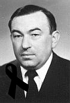

International
InternationalWładysław Szostak - uczony i stenograf
2011-02-19 | autor: flamenco108Za Wikipedią:
Władysław Szostak (ur. 6 kwietnia 1943, zm. 6 czerwca 2010) – polski politolog i prawnik, profesor zwyczajny, doktor habilitowany, nauczyciel akademicki.
Za jego stroną (zdjęcie kopiuję, nie linkuję):

Był stenografem konferencyjnym od 1967 roku, dyplomowanym nauczycielem stenografii od roku 1974. Nauczał stenografii oraz technik biurowych na różnych kursach przez 30 lat, przez 4 lata był lektorem stenografii na Uniwersytecie Jagiellońskim (lata 1977/78 - 1986/87). Poza praktyką stenograficzną interesował się się także systemami stenograficznymi, fonotypią oraz komputerowym redagowaniem tekstu. Był członkiem Komisji Systemowej Zarządu Głównego Stowarzyszenia Stenografów Maszynistek i Sekretarek (do spraw systemów stenograficznych) latach 1973-83. Był także Przewodniczącym Komisji ds. Kształcenia i Wydawnictw ZG SSMiS i zasiadał we władzach tego Stowarzyszenia aż do jego rozwiązania.
Publikacje z zakresu stenografii:
- Stenografia i cybernetyka. Stenograf Polski, Wydanie specjalne, 1969, str. 35-40,
- Skrócenia w stenografii. W: Zeszyty Teoretyczne SSiM, nr 10/1977, str. 47-55,
- Zasady skracania i stałe skróty w stenografii. W: Zeszyty Teoretyczne SSiM nr 13/1979, str. 64-87,
- Informatyka a… pisanie na maszynie. Stenograf Polski nr 4/1980, str. 23/24,
- Stenotypia i fonotypia - zakresy zastosowań. W: Zeszyty Teoretyczne SSiM nr 14/1980, str. 64-84,
- Podstawowe słownictwo stenograficzne. (Opracowanie dla potrzeb dydaktyki stenografii). W: Zeszyty Teoretyczne SSiM nr 15/1981, str. 57-68,
- Recenzja: T. Łazarska, R. Łazarski, Stenofonotypia. WSiP, Warszawa 1980, zamieszczona w: Zeszyty Teoretyczne SSiM nr 15/1981, str. 89-91,
- Proponowane zmiany w systemie stenografii St. Korbla. Stenograf Polski nr 9/1981, str. 5-8,
- Stenotypia i fonotypia w nowoczesnej administracji. O-M-T nr 10/1981, str. 32-35,
- Współautor podręcznika stenografii: K. Walaszkowa, W. Masłowski, W. Szostak, Stenografia według systemu Polińskiego. Katowice-Kraków 1982, stron 253. Piszę na komputerze. Podręcznik, Warszawa-Kraków 1996, stron 101 (ETHOS).
Władysław Szostak zmarł 6 czerwca 2010 roku.
2011-02-19 autor: flamenco108